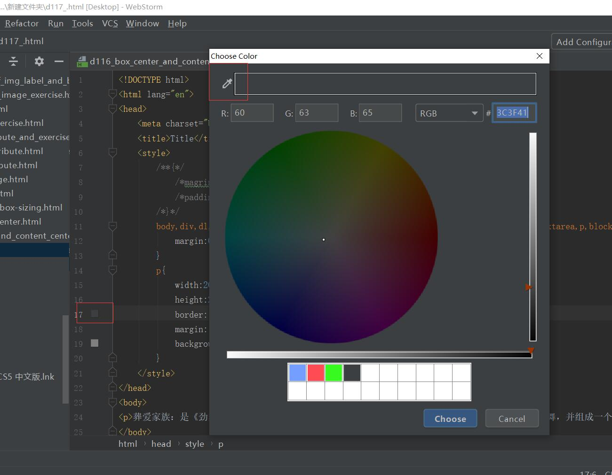
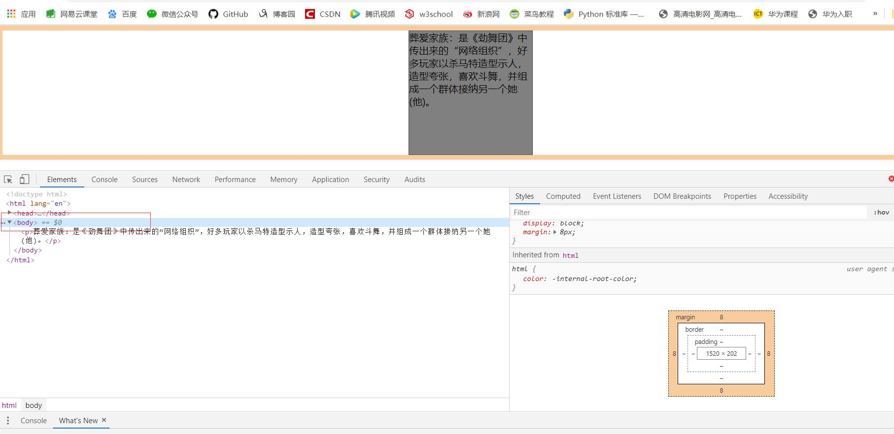
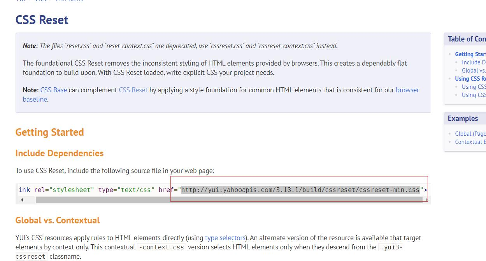
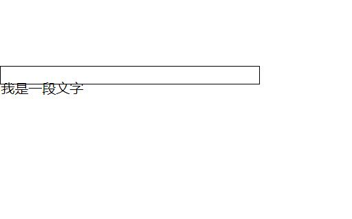
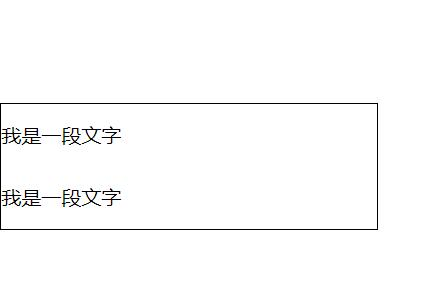

原文连接:https://www.cnblogs.com/ruigege0000/p/11696086.html
一、 webstorm取色技巧：webstorm内置了颜色取色器，我们对某种颜色未知的时候，可以利用下图中的取色器，进行颜色识别。
二、系统会默认给body添加外边距，因此我们对于这种情况应该首先去掉这些内外边距，在企业开发中为了更好的控制盒子的宽高和计算盒子的宽高等等，所以在企业开发过程中，编写代码之前第一件事情，就是清空默认的边距。

如何清空呢？
我们利用前面学过的通配符选择器，给默认标签去掉属性，因为优先级低，所以不影响我们已经设置好的标签，只给没有设置的标签进行去除边距
<style>
*{
magrin:0;
padding:0;
}
..........省略代码..........
注意点：通配符标签会遍历当前界面中的所有标签，会影响我们的性能，但是不用担心大牛已经帮我找好了解决措施。
在百度上搜索“yui css reset",我们进入网页：https://yuilibrary.com/yui/docs/cssreset/

我们进入上面截图中的网址，这里有一段代码，我们复制粘贴到style标签下面就可以了。
body,div,dl,dt,dd,ul,ol,li,h1,h2,h3,h4,h5,h6,pre,code,form,fieldset,legend,input,textarea,p,blockquote,th,td{
margin:0;padding:0
}
三、行高和字号
1.行高：在CSS中所有的行都是有行高的。
2.注意点：
（1）我们在盒子中，如果没设置盒子的高度，但是这个盒子中有文字，那么系统也会给盒子添加高度，这个高度等于文字的行高
（2）行高和盒子高不是同一个概念。
（3）文字在行高中默认居中的。
（4）在企业开发中我们经常将合资的高度和行高设置为一致的，那么这样我们就可以保证一行文字在合资的高度中是垂直剧中的。
（4）格式：line-height:数值px;
这里的数值是指这行文字整体的数值。
举个例子：
div{
border:black 1px solid;
width:300px;
height: 20px;
line-height:50px;}
..........省略代码.........
<div>我是一段文字</div>
我们可以看到，这样设置盒子高度小于文字行高，文字就溢出了。
（5）在企业开发过程中，如果一个盒子有多行文字就不能使用设置行高等于盒子高来达到让文字垂直居中的目的，只能通过设置padding计算数值来让文字居中。
div{
/*box-sizing: border-box;*/
border:black 1px solid;
width:300px;
height: 50px;
line-height:50px;
padding-bottom:50px;
}
</style>
</head>
<body>
<div>
我是一段文字
<br>
我是一段文字
</div>

四、源码：
d117and118_line_height.html地址:
https://github.com/ruigege66/HTML_learning/blob/master/d117and118_line_height.html
2.CSDN：https://blog.csdn.net/weixin_44630050（心悦君兮君不知-睿）
3.博客园：https://www.cnblogs.com/ruigege0000/
4.欢迎关注微信公众号：傅里叶变换，个人账号，仅用于技术交流，后台回复“礼包”获取Java大数据学习视频礼包